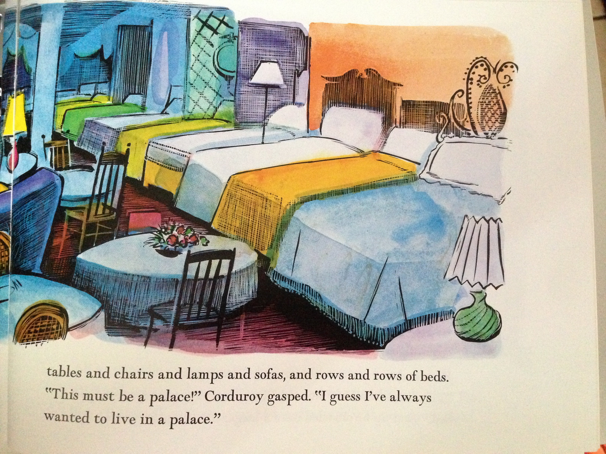
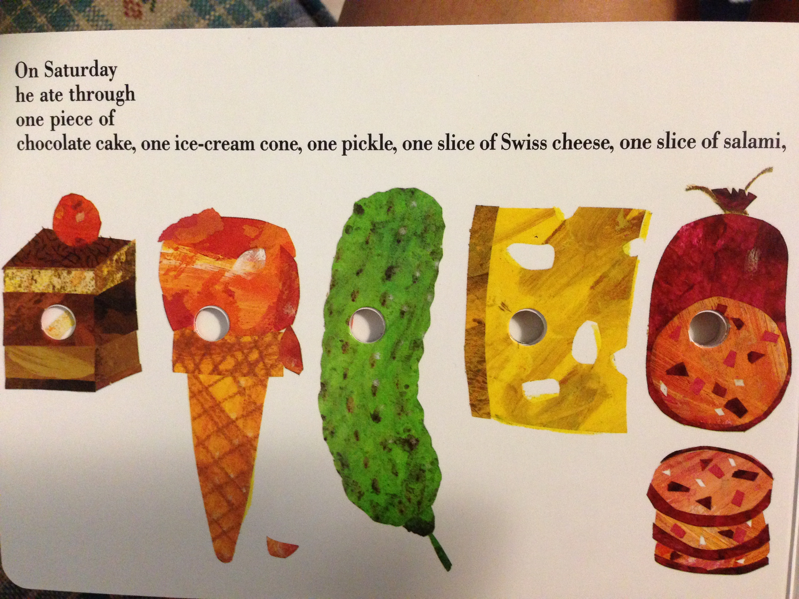
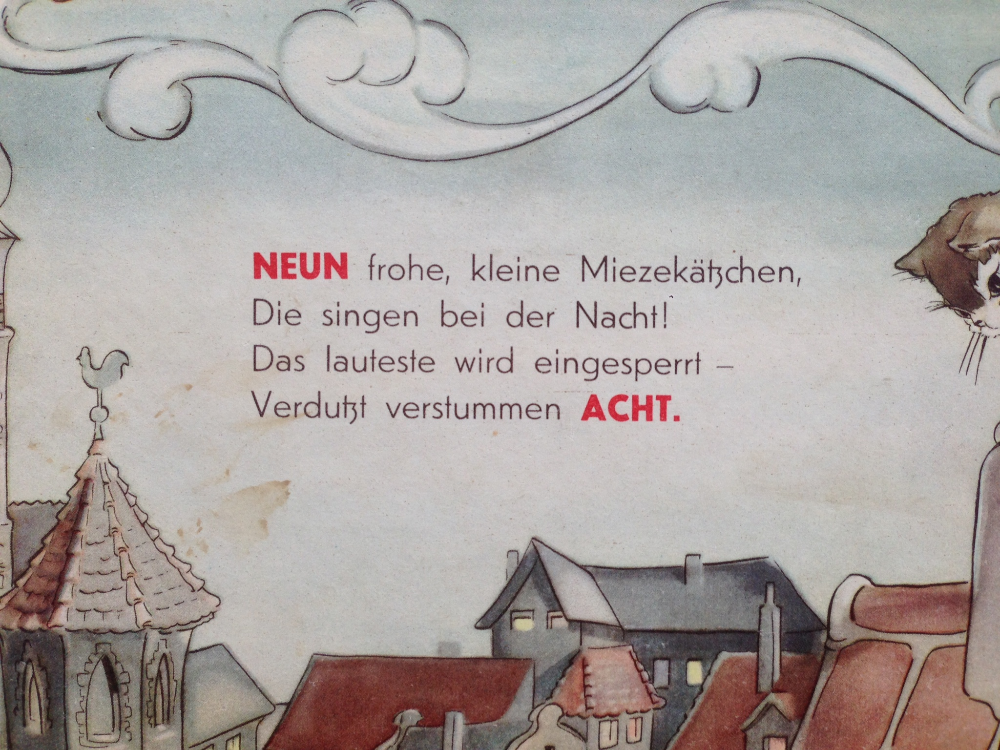
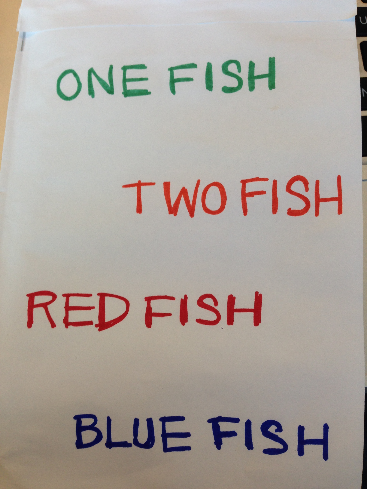

In this post, we will focus on "Storyteller", one of the ideas we have been working on to prototype how technology can help adult learners with very basic literacy and numeracy.
Over the past few weeks, we've been working on a very rough prototype of Storyteller, as well as fleshing out the idea, user experience, and research questions.
Background
Storybooks can be used to engage English language learners of any age. In particular, incorporating storybook reading into adult ESOL (English for Speakers of Other Languages) curricula can help adult learners:
- Learn material that has meaning outside of the ESOL classroom and can inspire family collaboration.
- Access ESOL education outside of the class, as they can substitute free or inexpensive storybooks for pricey workbooks.
- Practice English language pronunciation with a wide variety of vocabulary, as there are more storybooks than workbooks readily available.
However, reading and practicing pronunciation on their own can be difficult for learners. So we want to built a technological solution that helps adults practice their reading and pronunciation, allowing them to read along with an English speaker's voice and imitate their pronunciation. This attempts to emulate how kids learning English practice reading with their parents, following along with their voice and imitating their pronunciation of words.
In thinking about how we want to engage adult learners (our user group) with technology, we opted to use a smartphone, as many adult learners have access to one and it can easily be moved to interact with a physical storybook. One concern we have heard from many educators is that they view the storybook reading experience on paper to be special. Their students enjoy thumbing through big pages and looking at the beautiful pictures. These pictures provide context for the words on the page, allowing learners to discover the meaning of the words themselves as they make associations between the pictures and the text. So we aimed to hold on to that experience in Storyteller's user experience.
Walkthrough
Imagine an adult learner just checked out a new storybook from the library. She sits down to read it, but needs a little bit of facilitation in order to get a meaningful learning experience out of thumbing through the book's pages. She takes a picture of the book's cover. Immediately, either:
A copy of the book's cover appears on her screen, indicating that someone has already read this book and the text and audio from the book is in the app's system. She clicks "start" to begin the learning experience. The book begins reading the page out loud in a human voice.
- or-
She is asked to use her phone's camera to take a photo of the first page of the book, as the book is not in the app's system. She then clicks "start" to begin the learning experience. The book begins reading the page out loud in a somewhat computerized voice.
Once the page is done reading, she is able to review the text, practice English pronunciation through a system similar to Duolingo or Rosetta Stone's voice matcher, and listen to / view the translation in her native language side-by-side with the English text in order to provide context for the words on the page.
This continues on for the remainder of the book, prompting the learner to photograph the page before reading if the book has not been input into the app's system. Once the storybook is done, if the story has not been previously input into the system, the program uses Amazon Turk to crowdsource the spell-checking and recording of a human-voice version of the story. Once the Amazon Turk task is completed, the storybook's data is input into the app's system. Next time a learner searches for this book, it will have a human voice and translation.
Rough Prototype
To test if the idea was feasible, we built a very rough prototype on the computer, utilizing opensource OCR (optical character recognition), translation, and speech packages. After the user takes a photo, we send it directly from the photo to the computer with no editing.
To get into the technical details, in one script...
- We convert the image from the JPG to the TIF format so that it can be read into the Tesseract OCR package.
- We run OCR on the image using the Tesseract package, which returns the almost-perfect text.
- We run a little bit of our own natural language processing (removing page numbers, weird double punctuations etc).
- We use the Mac OSX "voice" to read the text out loud in English.
- We send the text to Google translate and request to translate the text into a user's native language.
- Once we get the translated text back from Google, we read it out loud in the user's native language using the correct speech pronounciation packages, allowing the user to view and hear the text in their native language alongside the English to provide context.
We were suprised at how well this rudimentary script worked. To give you an idea, here are a few photos from storybooks that we ran. Note: In this case the user's native language is German.

English: tables and chairs and lamps and sofas, and rows and rows of beds. This must be a palace! Corduroy gasped. I guess IVe always Wanted to live in a palace.
German: Tische und Stühle und Lampen und Sofas, und Reihen von Betten. Das muss ein Schloss! Cord schnappte nach Luft. Ich denke, IVe wollte immer in einem Palast leben.

English: And some are very, Very bad. Why are they sad and glad and bad? I do not know. Go ask your dad.
German: Und einige sind sehr, sehr schlecht. Warum sind sie traurig und froh und schlecht? Ich weiß nicht. Gehen fragen Sie Ihren Vater.

English: On Saturday he ate through one piece of chocolate cake, one ice-cream cone, one pickle, one slice of Swiss cheese, one slice of salami,
German: Am Samstag durch ein Stück Schokoladenkuchen aß er, eine Eistüte, eine Gurke, eine Scheibe Schweizer Käse, eine Scheibe Salami,

English: Now stop! Max said and sent the wild things off to bed without their supper. And Max the king of all wild things was lonely and wanted to be where someone loved him best of all.
German: Jetzt stoppen! Max sagte und schickte die wilden Kerle ins Bett, ohne ihr Abendessen. Und Max, der König aller wilden Kerle war einsam und wollte dort sein, wo ihn jemand am besten von allen geliebt.
Possible Directions
A few things we've begun to explore simultaneously are:
Can we modify the script to translate text to English for storybooks in learner's native language? Is the translation good? This would be useful if a learner has a favorite storybook that they already know in their native language.

Can we modify the script to allow learners to author their own storybooks by coloring in letters and illustrations? For example, one attempt is shown below:

English: ONE FISH l TWO FISH 1 RED FISH BLUE FISH
German: Ein Fisch zwei Fische 1 l Red Fish Blue Fish
We are pretty excited to keep fleshing out this idea. On the technical side, the next steps will be to do a better job detecting the image in the first place. We are looking into many image technology improvements such as using and Canny Edge Detector to grab edges of photograph, and brightness / contrast filters to help with OCR readability.